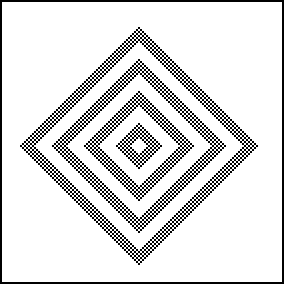
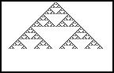

| From a single live cell, this rule grows a pattern of concentric diamonds that fill to a maximum density, then empty and refill. The far right picture is a time record: the middle cross-section of the two-dimensional picture (horizontally) vs time (vertically, generations increase downward). Note a familiar pattern. |  |  |
Return to 2D CA Examples.